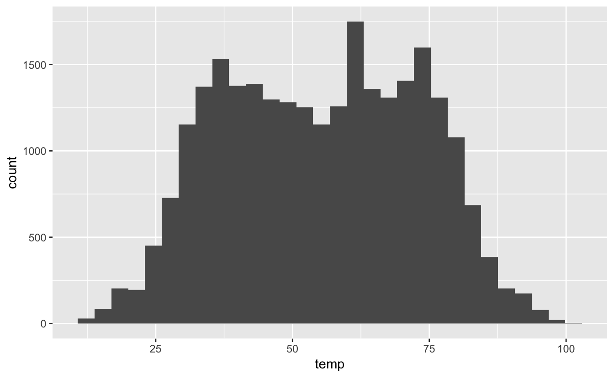
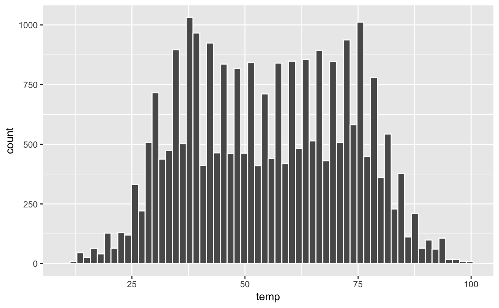
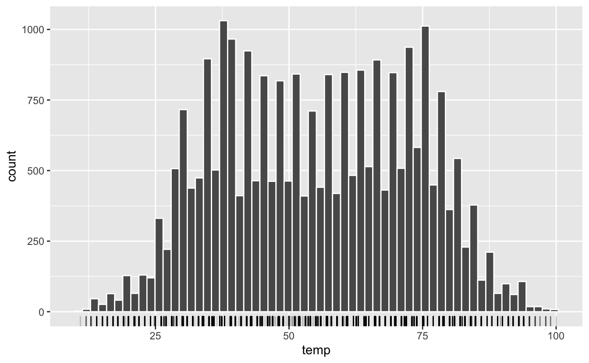
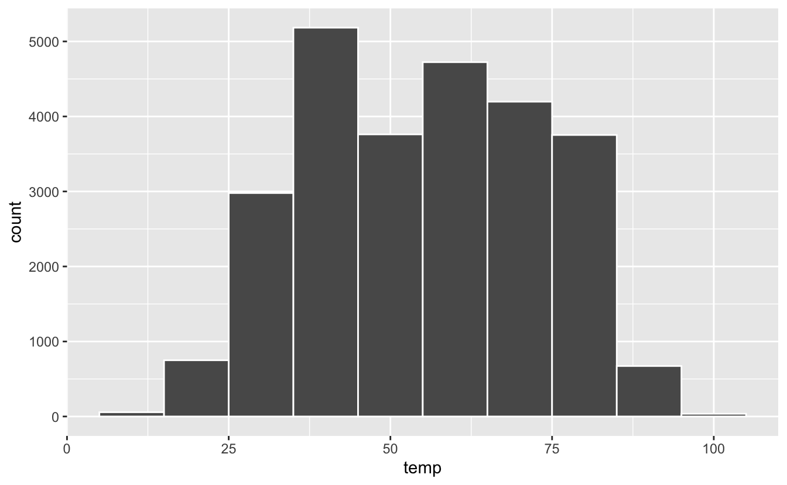
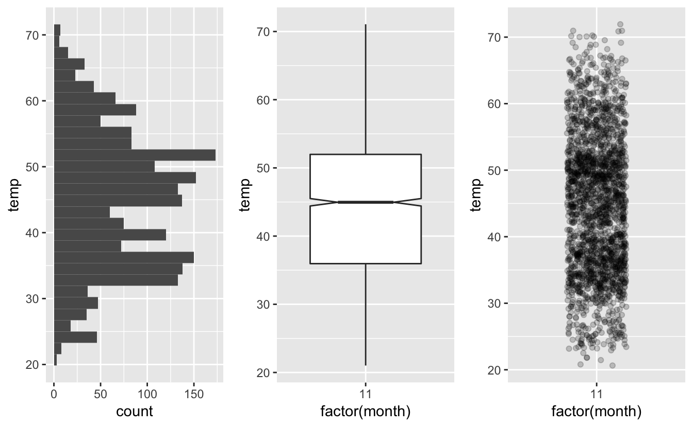

4 Visualiser des données avec ggplot2
Dans les chapitres 2 et 3, nous avons vu ce qui me semble être les concepts essentiels avant de commencer à explorer en détail des données dans R. Les éléments de syntaxe abordés dans la section 2.2 sont nombreux et vous n’avez probablement pas tout retenu. C’est pourquoi je vous conseille de garder les tutoriels de DataCamp à portée de main afin de pouvoir refaire les parties que vous maîtrisez le moins. Ce n’est qu’en répétant plusieurs fois ces tutoriels que les choses seront vraiment comprises et que vous les retiendrez. Ainsi, si des éléments de code présentés ci-dessous vous semblent obscures, revenez en arrière : toutes les réponses à vos questions se trouvent probablement dans les chapitres précédents.
Après la découverte des bases du langage R, nous abordons maintenant les parties de ce livre qui concernent la “science des données” (ou “Data Science” pour nos amis anglo-saxons). Nous allons voir dans ce chapitre qu’outre les fonctions View() et glimpse(), l’exploration visuelle via la représentation graphique des données est un moyen indispensable et très puissant pour comprendre ce qui se passe dans un jeu de données. La visualisation de vos données devrait toujours être un préambule à toute analyse statistique.
La visualisation des données est en outre un excellent point de départ quand on découvre la programmation sous R, car ses bénéfices sont clairs et immédiats : vous pouvez créer des graphiques élégants et informatifs qui vous aident à comprendre les données. Dans ce chapitre, vous allez donc plonger dans l’art de la visualisation de données, en apprenant la structure de base des graphiques réalisés avec ggplot2 qui permettent de transformer des données numériques et catégorielles en graphiques.
Toutefois, la visualisation seule ne suffit généralement pas. Il est en effet souvent nécessaire de transformer les données pour produire des représentations plus parlantes. Ainsi, dans les chapitres 5 et 6, vous découvrirez les verbes clés qui vous permettront de sélectionner des variables importantes, de filtrer les observations clés, de créer de nouvelles variables, de calculer des résumés, d’associer des tableaus ou de les remettre en forme.
C’est en combinant la transformation des données et les représentations graphiques avec votre curiosité et votre esprit critique, vous serez véritablement en mesure de réaliser l’analyse exploratoire de données, seul procédé permettant de poser des questions intéressantes et pertinentes sur les données et afin d’y répondre.
4.1 Prérequis
Dans ce chapitre, nous aurons besoin des packages suivants :
library(ggplot2)
library(nycflights13)
library(dplyr)Si ce n’est pas déjà fait pensez à les installer avant de les charger en mémoire.
Au niveau le plus élémentaire, les graphiques permettent de comprendre comment les variables se comparent en termes de tendance centrale (à quel endroit les valeurs ont tendance à être localisées, regroupées) et leur dispersion (comment les données varient autour du centre). La chose la plus importante à savoir sur les graphiques est qu’ils doivent être créés pour que votre public (le prof qui vous évalue, le collègue avec qui vous collaborez, votre futur patron, etc.) comprenne bien les résultats et les informations que vous souhaitez transmettre. Il s’agit d’un exercice d’équilibriste : d’une part, vous voulez mettre en évidence autant de relations significatives et de résultats intéressants que possible, mais de l’autre, vous ne voulez pas en inclure trop, afin d’éviter de rendre votre graphique illisible ou de submerger votre public. Tout comme n’importe quel paragraphe de document écrit, un graphique doit permettre de communiquer un message (une idée forte, un résultat marquant, une hypothèse nouvelle, etc).
Comme nous le verrons, les graphiques nous aident également à repérer les tendances extrêmes et les valeurs aberrantes dans nos données. Nous verrons qu’une façon de faire assez classique consiste à comparer la distribution d’une variable quantitative pour les différents niveaux d’une variable catégorielle.
4.2 La grammaire des graphiques
Les lettres gg du package ggplot sont l’abbréviation de “grammar of graphics” : la grammaire des graphiques. De la même manière que nous construisons des phrases en respectant des règles grammaticales précises (usage des noms, des verbes, des sujets et adjectifs…), la grammaire des graphiques établit un certain nombre de règles permettant de construire des graphiques : elle précise les composants d’un graphique en suivant le cadre théorique défini par Wilkinson (2005).
4.2.1 Éléments de la grammaire
En bref, la grammaire des graphiques nous dit que :
Un graphique est l’association (
mapping) de données/variables (data) à des attributs esthétiques (aesthetics) d’objets géométriques (geometric objects).
Pour clarifier, on peut disséquer un graphique en 3 éléments esentiels :
data: le jeu de données contenant les variables que l’on va associer à des objets géométriquesgeom: les objets géométriques en question. Cela fait référence aux types d’objets que l’on peut observer sur le graphiques (des points, des lignes, des barres, etc)aes: les attributs esthétiques des objets géométriques présents sur le graphique. Par exemple, la position sur les axesxety, la couleur, la taille, la transparence, la forme, etc. Chacun de ces attributs esthétiques peut-être associé à une variable de notre jeu de données.
Examinons un exemple pour bien comprendre.
4.2.2 Gapminder
En février 2006, un statisticien du nom de Hans Rosling a donné un TED Talk intitulé “The best stats you’we ever seen”. Au cours de cette conférence, Hans Rosling présente des données sur l’économie mondiale, la santé et le développement des pays du monde. Les données sont disponibles sur ce site et dans le package gapminder.
Pour l’année 2007, le jeu de données contient des informations pour 142 pays. Examinons les premières lignes de ce jeu de données :
| Country | Continent | Life Expectancy | Population | GDP per Capita |
|---|---|---|---|---|
| Afghanistan | Asia | 43.828 | 31889923 | 974.5803 |
| Albania | Europe | 76.423 | 3600523 | 5937.0295 |
| Algeria | Africa | 72.301 | 33333216 | 6223.3675 |
| Angola | Africa | 42.731 | 12420476 | 4797.2313 |
| Argentina | Americas | 75.320 | 40301927 | 12779.3796 |
| Australia | Oceania | 81.235 | 20434176 | 34435.3674 |
Pour chaque ligne, les variables suivantes sont décrites :
Country: le paysContinent: le continentLife Expectancy: espérance de vie à la naissancePopulation: nombre de personnes vivant dans le paysGDP per Capita: produit intérieur brut (PIB) par habitant en dollars américains. GDP est l’abréviation de “Growth Domestic Product”. C’est un indicateur de l’activité économique d’un pays, parfois utilisé comme une approximation du revenu moyen par habitant.
Examinons maintenant la figure @ref(fig:gapminder_fig) qui représente ces variables pour chacun des 142 pays de ce jeu de données (notez l’utilisation de la notation scientifique dans la légende).

(#fig:gapminder_fig)Espérance de vie en fonction du PIB par habitant en 2007
Si on décrypte ce graphique du point de vue de la grammaire des graphiques, on voit que :
- la variable
GDP per Capitaest associée à l’aestheticxde la position des points - la variable
Life Expectancyest associée à l’aestheticyde la position des points - la variable
Populationest associée à l’aestheticsize(taille) des points - la variable
Continentest associée à l’aestheticcolor(couleur) des points
Ici, l’objet géométrique (ou geom) qui représente les données est le point. Les données (ou data) sont contenues dans le tableau gapminder et chaune de ces variables est associée (mapping) aux caractéristiques esthétiques des points.
4.2.3 Autres éléments de la grammaire des graphiques
Outre les éléments indispensables évoqués ici (data, mapping, aes, et geom), il existe d’autres aspects de la grammaire des graphiques qui permettent de contrôler l’aspect des graphiques. Ils ne sont pas toujours indispensables. Nous en verrons néanmoins quelque-uns particulièrement utiles :
facet: c’est un moyen très pratique de scinder le jeu de données en plusieurs sous-groupe et de produire automatiquement un graphique pour chacun d’entre eux.position: permet notamment de modifier la position des barres d’un barplot.labs: permet de définir les titres, sous-titres et légendes des axes d’un graphique- l’ajustement du système de coordonnées.
theme: permet de modifier l’apect général des graphiques en appliquant des thèmes prédéfinis ou en modifiant certains aspects de thèmes existants
4.2.4 Le package ggplot2
Comme indiqué plus haut, le package ggplot2 (Wickham et al. 2018) permet de réaliser des graphiques dans R en respectant les principes de la grammaire des graphiques. Vous avez probablement remarqué que depuis le début de la section 4.2, beaucoup de termes sont écrits dans la police réservée au code informatique. C’est parce que les éléments de la grammaire des graphiques sont tous précisés dans la fonction ggplot() qui demande, au grand minimum, que les éléments suivants soient spécifiés :
- le nom du
data.framecontenant les variables qui seront utilisées pour le graphique. Ce nom correspond à l’argumentdatade la fonctionggplot(). - l’association des variables à des attributs esthétiques. Cela se fait grâce à l’argument
mappinget la fonctionaes()
Après avoir spécifié ces éléments, on ajoute des couches supplémentaires au graphique grâce au signe +. La couche la plus essentielle à ajouter à un graphique, est une couche contenant un élément géométrique, ou geom (par exemple des points, des lignes ou des barres). D’autres couches peuvent s’ajouter pour spécifier des titres, des facets ou des modifications des axes et des thèmes du graphique.
Dans le cadre de ce cours, nous nous limiterons aux 5 types de graphiques suivants :
- les nuages de points
- les graphiques en lignes
- les boîtes à moustaches ou boxplots
- les histogrammes
- les diagrammes bâtons
4.3 Les nuages de points
C’est probablement le plus simple des 5 types de graphiques citées plus haut. Il s’agit de graphiques bi-variés pour lesquels une variable est associée à l’axe des abscisses, et une autre est associée à l’axe des ordonnées. Comme pour le graphique présenté à la figure @ref(fig:gapminder_fig) ci-dessus, d’autres variables peuvent être associées à des caractéristiques esthétiques des points (transparence, taille, couleur, forme…).
Nous allons ici nous intéresser à la relation qui existe entre :
dep_delay: le retard des vols au décollage, que nous placerons sur l’axe des “x”arr_delay: le retard des mêmes vols à l’aterrissage, que nous placerons sur l’axe des “y”
Afin d’avoir un jeu de données plus facile à utiliser, nous nous contenterons de visualiser les vols d’Alaska Airline, donc le code de compagnie aérienne est "AS".
alaska_flights <- flights %>%
filter(carrier == "AS")Il est normal que vous ne compreniez pas encore les commandes ci-dessous. Nous verrons ça plus tard. Retenez juste que nous avons maintenant créer un nouveau tableau, nommé alaska_flights, qui contient toutes les informations des vols d’Alaska Airline. Commencez par examiner ce tableau avec la fonction View(). En quoi est-il différent du tableau flights ?
4.3.1 La couche de base : la fonction ggplot()
La fonction ggplot() permet d’établir la première base du graphique. C’est grâce à cette fonction que l’on précise quel jeu de données utiliser et quelle variables placer sur les axes :
ggplot(data = alaska_flights, mapping = aes(x = dep_delay, y = arr_delay))
Figure 4.1: Un graphique sans geom
Ce graphique est pour le moins vide : c’est normal, nous n’avons pas encore spéifié la couche contenant l’objet géométrique que nous souhaitons utiliser.
4.3.2 Ajout d’une couche supplémentaire : l’objet géométrique
Les nuages de points sont créés par la fonction geom_point() :
ggplot(data = alaska_flights, mapping = aes(x = dep_delay, y = arr_delay)) +
geom_point()Warning: Removed 5 rows containing missing values (geom_point).
Figure 4.2: Retards à l’arrivée en fonction des retard au décollage pour les vols d’Alaska Airline au départ de New York City en 2013
plusieurs choses importantes sont à remarquer ici :
- le graphique présente maintenant une couche supplémentaire constituée de points.
- la fonction
geom_point()nous prévient que 5 lignes contenant des données manquantes n’ont pas été intégrées au graphique. Les données manquent soit pour une variable, soit pour l’autre, soit pour les 2. il est donc impossible de les faire apparaître sur le graphique. - il existe une relation positive entre
dep_delayetarr_delay: quand le retard d’un vol au décollage augmente, le retard de ce vol augmente aussi à l’arrivée. - Enfin, il y a une grande majorité de points centrés près de l’origine (0,0).
Si je résume cette syntaxe :
- Au sein de la fonction
ggplot(), on spécifie 2 composants de la grammaire des graphiques :- le nom du tableau contenant les données grâce à l’argument
data = alaska_flights - l’association (
mapping) des variables à des caractéristiques esthétiques (aes()) en précisantaes(x = dep_delay, y = arr_delay):- la variable
dep_delayest associée à l’esthétique de positionx - la variable
arr_delayest associée à l’esthétique de positiony
- la variable
- le nom du tableau contenant les données grâce à l’argument
- On ajoute une couche au graphique
ggplot()grâce au symbole+. La couche en question précise le troisème élément indispensable de la grammaire des graphiques : l’objetgeométrique. Ici, les objets sont despoints. On le spécifie grâce à la fonctiongeom_point().
Quelques remarques concernant les couches :
- Notez que le signe
+est placé à la fin de la ligne. Vous recevrez un message d’erreur si vous le placez au début. - Quand vous ajoutez une couche à un graphique, je vous encourage vivement à presser la touche
enterde votre clavier juste après le symbole+. Ainsi, le code correspondant à chaque couche sera sur une ligne distincte, ce qui augmente considérablement la lisibilité de votre code. - Comme indiqué dans la section 2.2.4.3, tant que les arguments d’une fonction sont spécifiés dans l’ordre, on peut se passer d’écrire leur nom. Ainsi, les deux blocs de commande suivants produisent exactement le même résultat :
# Le nom des arguments est précisé
ggplot(data = alaska_flights, mapping = aes(x = dep_delay, y = arr_delay)) +
geom_point()
# Le nom des arguments est omis
ggplot(alaska_flights, aes(x = dep_delay, y = arr_delay)) +
geom_point()4.3.3 Exercices
- Donnez une raison pratique expliquant pourquoi les variables
dep_delayetarr_delayont une relation positive - Quelles variables (pas nécessairement dans le tableau
alaska_flights) pourraient avoir une corrélation négative (relation négative) avecdep_delay? Pourquoi ? Rappelez-vous que nous étudions ici des variables numériques. - Selon vous, pourquoi tant de points sont-il regroupés près de (0, 0) ? À quoi le point (0,0) correspond-il pour les vols d’Alaska Airline ?
- Citez les éléments de ce graphique/de ces données qui vous sautent le plus aux yeux ?
- Créez un nouveau nuage de points en utilisant d’autres variables du jeu de données
alaska_flights
4.3.4 Over-plotting
L’over-plotting est la superposition importante d’une grande quantité d’information sur une zone restreinte d’un graphique. Dans notre cas, nous observons un over-plotting important autour de (0,0). Cet effet est gênant car il est difficile de se faire une idée précise du nombre de points accumulés dans cette zone. La façon la plus simple de régler le problème est de modifier la transparence grâce à l’argument alpha de la fonction geom_point(). Par défaut, cette valeur est fixée à 1, pour une opacité totale. Une valeur de 0 rend les points totalement transparents, et donc invisibles. Trouver la bonne valeur peut demander de tâtonner une peu :
ggplot(data = alaska_flights, mapping = aes(x = dep_delay, y = arr_delay)) +
geom_point(alpha = 0.2)
Figure 4.3: La même figure, avec des points semi-transparents
Notez que :
- la transparence est additive : plus il y a de points, plus la zone est foncée car les points se superposent et rendent la zone plus opaque.
- l’argument
alpha = 0.2n’est pas intégré à l’intérieur d’une fonctionaes()car il n’est pas associé à une variable : c’est un simple paramètre.
L’over-plotting est souvent rencontré lorsque l’on représente plusieurs nuages de points pour les différentes valeurs d’une variable catégorielle. par exemple, si on transforme les mois de l’année en facteur (factor(month)), ont peut regarder s’il existe une relation entre les retards à l’aterrissage et le mois de l’année :
ggplot(data = alaska_flights, mapping = aes(x = factor(month), y = arr_delay)) +
geom_point()Figure 4.4: Retards à l’arrivée pour les 12 mois de l’année 2013
Ici, l’ajout de transparence ne serait pas suffisant. Une autre solution est d’appliquer la mothode dîte de “jittering”, ou tremblement. Elle consiste à ajouter un bruit aléatoire horizontal et/ou vertical aux points d’un graphique. Ici, on peut ajouter un léger bruit horizontal afin de disperser un peu les points pour chaque mois de l’année. On n’ajoute pas de bruit vertical car on ne souhaite pas que les valeurs de retard (sur l’axe des y) soient altérées :
ggplot(data = alaska_flights, mapping = aes(x = factor(month), y = arr_delay)) +
geom_jitter(width = 0.25)Figure 4.5: Retards à l’arrivée pour les 12 mois de l’année 2013
On y voit déjà plus clair. L’argument width permet de spécifier l’intensité de la dispersion horizontale. Pour ajouter du bruit vertical (ce qui n’est pas souhaitable ici !), on peut ajouter l’argument height. le graphique de la figure 4.5 est parfois appelé un “stripchart”. C’est un graphique du type “nuage de points”, mais pour lequel l’une des 2 variables et numérique, et l’autre est catégorielle.
Il est évidemment possible d’ajouter de la transparence :
ggplot(data = alaska_flights, mapping = aes(x = factor(month), y = arr_delay)) +
geom_jitter(width = 0.25, alpha = 0.5)Figure 4.6: Retards à l’arrivée pour les 12 mois de l’année 2013
4.3.5 Couleur, taille et forme
L’argument color (ou colour, les deux orthographes fonctionnent) permet de spécifier la couleur des points. L’argument size permet de spécifier la taille des points. L’argument shape permet de spécifier la forme utilisée en guise de symbole. Ces 3 arguments peuvent être utilisés comme des paramètres, pour modifier l’ensemble des points d’un graphique. Mais ils peuvent aussi être associés à une variable, pour apporter une information supplémentaire.
Comparez les deux graphiques suivants :
ggplot(data = alaska_flights, mapping = aes(x = dep_delay, y = arr_delay)) +
geom_point(color = "blue")
Figure 4.7: Utilisation correcte de color
ggplot(data = alaska_flights, mapping = aes(x = dep_delay, y = arr_delay)) +
geom_point(aes(color = "blue"))
Figure 4.8: Utilisation incorrecte de color
Le code qui permet de produire la figure 4.7 fait un usage correct de l’argument color. On demande des points de couleur bleue, les points apparaîssent bleus. La figure 4.8 en revanche ne produit pas le résultat attendu. Puisque nous avons mis l’argument color à l’intérieur de la fonction aes(), R s’attend à ce que la couleur soit associée à une variable. Puisqu’aucune variable ne s’appelle “blue”, R utilise la couleur par défaut. Pour associer la couleur des points à une variable, nous devons fournir un nom de variable valide :
ggplot(data = alaska_flights, mapping = aes(x = dep_delay, y = arr_delay)) +
geom_point(aes(color = factor(month)))
Figure 4.9: Association de color à une variable catégorielle
Ici, l’utilisation de la couleur est correcte. Elle est associée à une variable catégorielle, et chaque valeur possible du vecteur month se voit donc attribuer une couleur différente.
ggplot(data = alaska_flights, mapping = aes(x = dep_delay, y = arr_delay)) +
geom_point(aes(color = arr_time))
Figure 4.10: Association de color à une variable numérique
De la même façon, la couleur des points est ici associée à une variable continue (l’heure d’arrivée des vols). Les points se voient donc attribuer une couleur choisie le long d’un gradient.
La même approche peut être utilisée pour spécifier la forme des symboles avec l’argument shape. Attention toutefois : une variable continue ne peut pas être associée à shape
ggplot(data = alaska_flights, mapping = aes(x = dep_delay, y = arr_delay)) +
geom_point(aes(shape = factor(month)))
Figure 4.11: Association de shape à un facteur
Vous noterez que seuls les 6 premiers niveaux d’un facteur se voient attribuer une forme automatiquement. Au delà de 6 symboles différents sur un même graphique, le résultat est souvent illisible. Il est possible d’ajouter plus de 6 symboles, mais cela demande de modifier la légende manuellement et concrètement nous n’en aurons jamais besoin. Lorsque plus de 6 séries doivent être distinguées, d’autres solutions bien plus pertinentes (par exemple les factets) devraient être utilisées.
Comme pour la couleur, il est possible d’e spécifier’utiliser l’argument shape en tant que paramètre du graphique sans l’associer à une variable. Il faut alors fournir un code compris entre 0 et 24 :
ggplot(data = alaska_flights, mapping = aes(x = dep_delay, y = arr_delay)) +
geom_point(shape = 4)
Figure 4.12: Utilisation de shape en tant que paramètre
Notez qu’ici, ggplot() ne crée pas de légende : tous les points ont le même symbole, ce symbole n’est pas associé à une variable, une légende est donc inutile.
Parmis les valeur possibles pour shape, les symboles 21 à 24 sont des symboles dont on peut spécifier séparément la couleur du contour, avec color et la couleur du fond avec fill :
ggplot(data = alaska_flights, mapping = aes(x = dep_delay, y = arr_delay)) +
geom_point(shape = 21, fill = "steelblue", color = "orange", alpha = 0.5)
Figure 4.13: Utilisation de shape, color et fill
N’hésitez pas à zoomer pour bien observer les points et comprendre ce qui se passe. Un conseil, faites des choix raisonnables ! Trop de couleurs n’est pas forcément souhaitable.
Enfin, on peut ajuster la taille des symboles avec l’argument size. Tout comme il n’est pas possible d’associer une variable continue à shape, et il n’est pas conseillé d’associer une variable catégorielle nominale (c’est à dire un facteur non ordonné) à size. Associer une variable continue est en ravanche parfois utile :
ggplot(data = alaska_flights, mapping = aes(x = dep_delay, y = arr_delay)) +
geom_point(aes(size = arr_time), alpha = 0.1)
Figure 4.14: Association d’une variable continue à la taille des symboles avec l’argument size
Si l’over-plotting est ici très important (c’est pourquoi j’ai utilisé alpha), on constate néanmoins que les vols avec les retards les plus importants sont presque tous arrivés très tôt dans la journée (“500” signifie 5h00 du matin). Il s’agit probablement de vols qui devaient arriver dans la nuit, avant minuit, et qui sont finalement arrivés en tout début de journée, etnre 00h01 et 5h00 du matin. Comme pour les autres arguments, il est possible d’utiliser size avec une valeur fixe, la même pour tous les symboles, lorsque cet argument n’est pas associé à une variable.
Enfin un conseil : évitez de trop surcharger vos graphiques. En combinant l’ensemble de ces arguments, il est malheureusement très facile d’obtenir des graphiques peu lisibles, ou contenant tellement d’information qu’ils en deviennent difficiles à déchiffrer. Faites preuve de modération :
ggplot(data = alaska_flights, mapping = aes(x = dep_delay, y = arr_delay, size = arr_time)) +
geom_point(alpha = 0.6,
shape = 22,
color = "orange",
fill = "steelblue",
stroke = 2)Figure 4.15: Sometimes, less is more!
4.3.6 Exercices
À quoi sert l’argument stroke ?
Avec le jeu de données diamonds, tapez le code permettant de créer le graphique 4.16 (Indice : affichez le tableau diamonds dans la console afin de voir quelles sont les variables disponibles).
Figure 4.16: Prix de 53940 diamants en fonction de leur taille en carats et de leur couleur.
Selon vous, à quoi sont dues les bandes verticales que l’on observe sur ce graphique ?
4.4 Les graphiques en lignes
4.4.1 Un nouveau jeu de données
Les graphiques en ligne, ou “linegraphs” sont généralement utilisés lorsque l’axe des x porte une information temporelle, et l’axe des y une autre variable numérique. Le temps est une variable naturellement ordonnée : les jours, semaines, mois, années, se suivent naturellement. Les graphiques en lignes devraient être évités lorsqu’il n’y a pas une organisation séquentielle évidente de la variable portée par l’axe des x.
Concentrons nous maintenant sur le tableau weather du package nycflights13. Explorez ce tableau en appliquant les méthodes vues dans le chapitre 3. N’oubliez pas de consultez l’aide de ce jeu de données.
weather# A tibble: 26,115 x 15
origin year month day hour temp dewp humid wind_dir wind_speed
<chr> <dbl> <dbl> <int> <int> <dbl> <dbl> <dbl> <dbl> <dbl>
1 EWR 2013 1 1 1 39.0 26.1 59.4 270 10.4
2 EWR 2013 1 1 2 39.0 27.0 61.6 250 8.06
3 EWR 2013 1 1 3 39.0 28.0 64.4 240 11.5
4 EWR 2013 1 1 4 39.9 28.0 62.2 250 12.7
5 EWR 2013 1 1 5 39.0 28.0 64.4 260 12.7
6 EWR 2013 1 1 6 37.9 28.0 67.2 240 11.5
7 EWR 2013 1 1 7 39.0 28.0 64.4 240 15.0
8 EWR 2013 1 1 8 39.9 28.0 62.2 250 10.4
9 EWR 2013 1 1 9 39.9 28.0 62.2 260 15.0
10 EWR 2013 1 1 10 41 28.0 59.6 260 13.8
# ... with 26,105 more rows, and 5 more variables: wind_gust <dbl>,
# precip <dbl>, pressure <dbl>, visib <dbl>, time_hour <dttm>Nous allons nous intéresser à la variable temp, qui contient un enregistrement de température pour chaque heure de chaque jour de 2013 pour les 3 aéroports de New York. Cela représente une grande quantité de données, aussi, nous nous limiterons aux températures observées entre le 1er et le 15 janvier, pour l’aéroport Newark uniquement.
small_weather <- weather %>%
filter(origin == "EWR",
month == 1,
day <= 15)La fonction filter() fonctionne sur le même principe que la fonction subset() vue lors du premier TP. Ici, nous demandons à R de créer un nouveau tableau de données, nommé small_weather, qui ne contiendra que les lignes correspondant à origin == "EWR", et month == 1, et day <= 15, c’est à dire les données météorologiques de l’aéroport de Newark pour les 15 premiers jours de janvier 2013.
4.4.2 Exercice
Avec View(), consultez le tableau nouvellement créé. Expliquez pourquoi la variable time_hour identifie de manière unique le moment ou chaque mesure a été réalisée alors que ce n’est pas le cas de la variable hour.
4.4.3 La fonction geom_line()
Les line graphs sont produits de la même façon que les nuages de points. Seul l’objet géométrique permettant de visualiser les données change. Au lieu d’utiliser geom_point(), on utilisera geom_line() :
ggplot(data = small_weather, mapping = aes(x = time_hour, y = temp)) +
geom_line()Figure 4.17: Températures horaires à l’aéroport de Newark entre le 1er et le 15 janvier 2013
Très logiquement, on observe des oscillations plus ou moins régulières qui correspondent à l’alternance jour/nuit. Notez l’échelle de l’axe des ordonnées : les températures sont enregistrées en degrés Farenheit.
Nous connaissons maintenant 2 types d’objets geométriques : les points les les lignes. il est tout à fait possible d’ajouter plusieurs couches à un graphique, chacune d’elle correspondant à un objet geométrique différent :
ggplot(data = small_weather, mapping = aes(x = time_hour, y = temp)) +
geom_line() +
geom_point()Figure 4.18: Températures horaires à l’aéroport de Newark entre le 1er et le 15 janvier 2013
Enfin, comme pour les points, il est possible de spécifier plusieurs caractéristiques esthétiques des lignes, soit en les associant à des variables, au sein de la fonction aes(), soit en les utilisant en guise de paramètres pour modifier l’aspect général. Les arguments les plus classiques sont une fois de plus color (ou colour) pour modifier la couleur des lignes, linetype pour modifier le type de lignes (continues, pointillées, tirets, etc), et size pour modifier l’épaisseur des lignes.
Reprenons le jeu de données complet weather, et filtrons uniquement les dates comprises entre le premier et le 15 janvier, mais cette fois pour les 3 aéroports de New York :
small_weather_airports <- weather %>%
filter(month == 1,
day <= 15)Nous pouvons maintenant réaliser un “linegraph” sur lequel une courbe apparaîtra pour chaque aéroport. Pour cela, nous devons associer la variable origin à un attribut esthétique des lignes. Par exemple :
ggplot(data = small_weather_airports, mapping = aes(x = time_hour, y = temp)) +
geom_line(aes(color = origin))Figure 4.19: Températures horaires des 3 aéroports de New York entre le 1er et le 15 janvier 2013
Ou bien :
ggplot(data = small_weather_airports, mapping = aes(x = time_hour, y = temp)) +
geom_line(aes(linetype = origin))Figure 4.20: Températures horaires des 3 aéroports de New York entre le 1er et le 15 janvier 2013
Ou encore :
ggplot(data = small_weather_airports, mapping = aes(x = time_hour, y = temp)) +
geom_line(aes(color = origin, linetype = origin))Figure 4.21: Températures horaires des 3 aéroports de New York entre le 1er et le 15 janvier 2013
4.4.4 À quel endroit placer aes() et les arguments color, size, etc. ?
Jusqu’à maintenant, pour spécifier les associations entre certaines variables et les caractéristiques esthétiques d’un graphique, nous avons été amenés à utiliser la fonction aes() à 2 endroits distincts :
- au sein de la fonction
ggplot() - au sein des fonctions
geom_XXX()
Comment choisir l’endroit où renseigner aes() ? Pour bien comprendre, reprenons l’exemple du graphique 4.18 sur lequel nous avions ajouté 2 couches contenant chacune un objet géométrique différent (afin de gagner de la place, j’omets volontairement le nom es arguments data et mapping dans la fonction ggplot()) :
ggplot(small_weather, aes(x = time_hour, y = temp)) +
geom_line() +
geom_point()
Figure 4.22: Températures horaires à l’aéroport de Newark entre le 1er et le 15 janvier 2013
Voyons ce qui se passe si on associe la variable wind_speed à l’esthétique color, à plusieurs endroits du code ci-dessus. Comparez les trois syntaxes et observez les différences entre les 3 graphiques obtenus :
ggplot(small_weather, aes(x = time_hour, y = temp, color = wind_speed)) +
geom_line() +
geom_point()Figure 4.23: Températures horaires et vitesse du vent à l’aéroport de Newark entre le 1er et le 15 janvier 2013
ggplot(small_weather, aes(x = time_hour, y = temp)) +
geom_line(aes(color = wind_speed)) +
geom_point()Figure 4.24: Températures horaires et vitesse du vent à l’aéroport de Newark entre le 1er et le 15 janvier 2013
ggplot(small_weather, aes(x = time_hour, y = temp)) +
geom_line() +
geom_point(aes(color = wind_speed))Figure 4.25: Températures horaires et vitesse du vent à l’aéroport de Newark entre le 1er et le 15 janvier 2013
Vous l’aurez compris, lorsque l’on spécifie aes() à l’intérieur de la fonction ggplot(), les associations de variables et d’esthétiques sont appliquées à tous les objets géométriques, donc à toutes les autres couches. En revanche, quand aes() est spécifié dans une couche donnée, les réglages ne s’appliquent qu’à cette couche spécifique.
En l’occurence, si le même réglage est spécifié dans la fonction ggplot() et dans une fonction geom_XXX(), c’est le réglage spécifié dans l’objet géométrique qui l’emporte :
ggplot(small_weather, aes(x = time_hour, y = temp, color = wind_speed)) +
geom_line(color = "orange") +
geom_point()Figure 4.26: Températures horaires et vitesse du vent à l’aéroport de Newark entre le 1er et le 15 janvier 2013
il est ainsi possible de spécifier des éléments esthétiques qui s’appliqueront à toutes les couches d’un graphique, et d’autres qui ne s’appliqueront qu’à une couche spécifique, qu’à un objet géométrique particulier.
4.5 Les histogrammes
Un histogramme permet de visualiser la distribution d’une variable numérique continue. Contrairement aux deux types de graphique vus précédemment, il sera donc inutile de préciser la variable à associer à l’axe des ordonnées : R la cacule automatiquement pour nous lorsque nous faisons appel à la fonction geom_histogram() pour créer un objet géométrique “histogramme”.
4.5.1 L’objet geom_histogram()
Si on reprend le jeu de données weather, on peut par exemple s’intéresser à la distribution des températures tout au long de l’année :
ggplot(weather, aes(x = temp)) +
geom_histogram()`stat_bin()` using `bins = 30`. Pick better value with `binwidth`.
On observe plusieurs choses :
- La distribution semble globalement bimodale avec un pic autour de 36-37 degrés farenheit (2 à 3 ºC) et un autre autour de 65-70 degrés farenheit (18-21 ºC).
- Les températures ont varié de 12 degrés farenheit (-11ºC) à 100 degrés farenheit (près de 38ºC).
- R nous avertit qu’une valeur non finie n’a pas pu être intégrée
- R nou indique qu’il a choisi de représenter 30 classes de températures (
bins = 30). C’est la valeur par défaut. R nous conseille de choisir une valeur plus appropriée.
Comme pour les nuages de points utilisant les symboles 21 à 24, il est possible de spécifier la couleur de remplissage des barres avec l’argument fill et la couleur du contour des barres avec l’argument color :
ggplot(weather, aes(x = temp)) +
geom_histogram(fill = "steelblue", color = "grey80")4.5.2 La taille des classes
Par défaut, R choisit arbitrairement de représenter 30 classes. Ce n’est que rarement le bon choix, et il est souvent necessaire de tâtonner pour trouver le nombre de classes qui permet d’avoir une idée correcte de la distribution des données.
Il est possible d’ajuster les caractéristiques des classes de l’histogramme de l’une des 3 façons suivantes :
- en ajustant le nombre de catégories avec
bins - en précisant la largeur des catégories avec
binwidth - en fournissant manuellement les limites des classes de tailles avec
breaks
ggplot(weather, aes(x = temp)) +
geom_histogram(bins = 60, color = "white")
Ici, augmenter le nombre de classes à 60 permet de prendre conscience que la distribution n’est pas aussi lisse qu’elle en avait l’air. L’ajout d’une couche supplémentaire avec la fonction geom_rug() (“a rug”" est un tapis en français) permet de prendre conscience que les données de température ne sont pas aussi continues qu’on pouvait le croire :
ggplot(weather, aes(x = temp)) +
geom_histogram(bins = 60, color = "white") +
geom_rug(alpha = 0.1)
Notez la transparence importante utilisée pour geom_rug. On constate que la précision des relevés de température n’est en fait que de quelques dixièmes de degrés.
On peut également modifier la largeur des classes avec binwidth :
ggplot(weather, aes(x = temp)) +
geom_histogram(binwidth = 10, color = "white")
Ici chaque catégorie recouvre 10 degrés farenheit. Enfin, il est possible de déterminer manuellement les limites des classes souhaitées avec l’argument breaks :
ggplot(weather, aes(x = temp)) +
geom_histogram(breaks = c(0, 10, 20, 50, 60, 70, 80, 105), color = "white")
Vous constatez ici que les choix effectués ne sont pas très pertinents : toutes les classes n’ont pas la même largeur. Cela rend l’interprétation difficile. Il est donc vivement conseillé, pour spécifier breaks, de créer des suites régulières, comme avec la fonction seq() par exemple (consultez sont fichier d’aide et les exemples !) :
limits <- seq(from = 10, to = 105, by = 5)
limits [1] 10 15 20 25 30 35 40 45 50 55 60 65 70 75 80 85 90 95 100
[20] 105ggplot(weather, aes(x = temp)) +
geom_histogram(breaks = limits, color = "white")
Il est important que toute la gamme des valeurs de temp soit couverte par les limites des classes que nous avons définies, sinon, certaines valeurs sont omises et l’histogramme est donc incomplet/incorrect. Une façon de s’en assurer est d’afficher les résumé des données pour la colonne temp du jeu de données weather :
summary(weather$temp) Min. 1st Qu. Median Mean 3rd Qu. Max. NA's
10.94 39.92 55.40 55.26 69.98 100.04 1 On voit ici que les températures varien de 10.94 à 100.04 degrés farenheit. Les classes que nous avons définies couvrent une plage de température plus large (de 10 à 105). Toutes les données sont donc bien intégrées à l’histogramme.
4.6 Les facets
Nous l’avons indiqué plus haut, les facets permettent de scinder le jeux de données en plusieurs sous-groupes et de faire un graphique pour chacun des sous groupes.
Ainsi, si l’on souhaite connaître la distribution des températures pour chaque mois de l’année 2013, plutôt que de faire ceci :
ggplot(weather, aes(x = temp, fill = factor(month))) +
geom_histogram(bins = 20, color = "grey30")
qui produit un graphique certes assez joli, mais difficile à interpréter, mieux vaut faire ceci :
ggplot(weather, aes(x = temp, fill = factor(month))) +
geom_histogram(bins = 20, color = "grey30") +
facet_wrap(~factor(month), ncol = 3)
La couche supplémentaire créée avec facet_wrap permet donc de scinder les données en foncton d’une variable. Attention à la syntaxe ; il ne faut pas oublier le symbole ~ devant la variable que l’on souhaite utiliser pour scinder les données. Il va sans dire que la variable utilisée doit être catégorielle et non continue, c’est la raison pour laquelle j’utilise la notation factor(month) et non simplement month.
Avec la fonction facet_wrap(), il est possible d’indiquer à R comment les différents graphiques doivent être agencés en spécifiant soit le nombre de colonnes souhaitées avec ncol, soit le nombre de lignes souhaitées avec nrow.
Une autre fonction nommée facte_grid permet d’agencer des sous graphique selon 2 variables catégorielles. Per exemple :
ggplot(weather, aes(x = temp, fill = factor(month))) +
geom_histogram(bins = 20, color = "grey30") +
facet_grid(factor(month) ~ origin)
Ici, nous avons utilisé la variable month (transformée en facteur) et la variable origin pour créer un histogramme pour chaque combinaison des modalités de ces 2 variables. Il est donc possible de faire facilement des comparaisons des températures intermensuelles au sein d’un aéroport donné (en colonnes), ou de faire des comparaisons des températures observées le même mois dans plusieurs aéroports (en lignes).
facet_grid() doit elle aussi être utilisée avec le symbole ~. Comme pour les indices d’un tableaux, on met à gauche du ~ la variable qui figurera en lignes, et à droite du ~ celle qui figurera en colonnes. Les arguments nrow et ncol ne peuvent donc pas être utilisés : c’est le nombre de niveaux de chaque variable catégorielle fournie à facet_grid() qui détermine le nombre de lignes et de colonnes du graphique.
Références
Wilkinson, Leland. 2005. The Grammar of Graphics. 2nd ed. New-York: Springer-Verlag. https://www.springer.com/us/book/9780387245447.
Wickham, Hadley, Winston Chang, Lionel Henry, Thomas Lin Pedersen, Kohske Takahashi, Claus Wilke, and Kara Woo. 2018. Ggplot2: Create Elegant Data Visualisations Using the Grammar of Graphics.